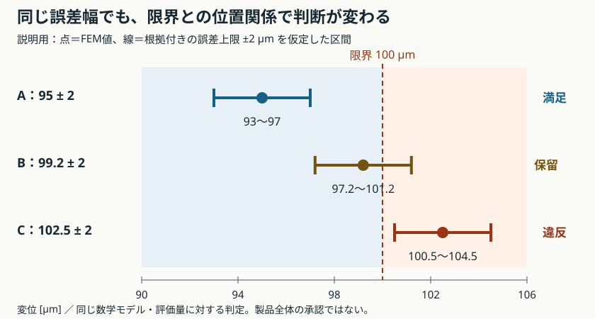

MECHANICAL DESIGN STUDY · LESSON 06
評価量と必要精度を決める
「計算値が限界以内」と「誤差を考慮しても限界以内」は、別の判断です。
設計で使う評価量を選び、その量の誤差と設計余裕を比べます。確認は最後にまとめて行い、一問一答は復習にも使います。
今回は評価仕様の講義です。以下の限界値・誤差幅は説明用の仮定で、既存ケースやCLIの合否基準には追加していません。
何を判断するための精度か
講義5の最細分割Q9では、先端変位誤差は約0.00349%、ひずみ場のエネルギーノルム誤差e_Eは約0.585%でした。保存結果JSON
この二つは評価対象と定義が違います。 e_Eは領域全体で積分した誤差で、ある一点の応力誤差が0.585%以下であるとは保証しません。
設計目的から評価量Qを選ぶ例。全項目の実装済みを意味しません。| 目的 | 評価量の例 | 固定する条件 |
|---|
| 接触・干渉を防ぐ | 指定位置・方向の変位、隙間 | 座標系、荷重、相手部品の変位 |
| 局所的な降伏を避ける | 定義した位置の相当応力 | 材料則、形状、評価位置、平均化方法 |
| 共振を避ける | 対応づけたモードの固有振動数 | 支持剛性、付加質量、モードの取り違え |
| 過熱を避ける | 指定部品の温度、最高温度 | 発熱、接触熱抵抗、対流・放射、時刻 |
最大応力を使う場合も、鋭い角の特異点の最大値を追う前に、形状と評価方法を確認します。メッシュごとに位置や平均化方法を変えると、同じQの比較になりません。
設計余裕と誤差幅を比べる
上限制約Q≤Q_limを考えます。Q_hはFEM値、Q_modelは同じ数学モデルの連続体解。この節では、根拠付きの数値誤差上限Δ_numが与えられ、|Q_model−Q_h|≤Δ_numを満たすと仮定します。
Q_model ∈ [Q_h−Δ_num, Q_h+Δ_num]
設計余裕 m = Q_lim−Q_h
- 区間の上端が限界以下：このモデル・この評価量の制約を満たす。
- 区間の下端が限界より大きい：このモデル・この評価量の制約に違反する。
- 区間の下端≤限界<上端：合否を確定できない。下端が限界と一致する場合も含みます。
等号は合格側に含めます。公称値が限界以下のとき、Δ_num≤mなら数値誤差を含めてもモデル上の制約を満たします。

点はFEM値、線は同じ数学モデルの解を含むと仮定した区間。全行同じ線形尺度です。
図を拡大して開く
限界100 µm＝0.1 mm。全て説明用の仮定。| 例 | Q_h [µm] | Δ_num [µm] | 区間 [µm] | モデル上の判定 |
|---|
| A | 95 | 2 | 93〜97 | 満足 |
| B | 99.2 | 2 | 97.2〜101.2 | 判定保留 |
| C | 102.5 | 2 | 100.5〜104.5 | 違反 |
誤差上限が未取得なら、0で埋めず未評価にします。区間を作る情報がない状態と、有効な区間が限界をまたぐ状態も分けます。
メッシュを細かくしても消えない差
前節の区間は同じモデルの解を対象にします。実機の支持剛性、荷重、寸法、物性の差は別に残ります。数値誤差が小さくても、剛固定モデルが実機の弾性支持と一致するとは限りません。
同じQへ換算した数値誤差上限Δ_numと、その他の差の上限Δ_otherにそれぞれ根拠があるなら、三角不等式でΔ_num+Δ_otherを保守的な上限にできます。Δ_otherの妥当性と、二重計上しない整理が必要です。
説明用にQ_h=95 µm、限界100 µm、Δ_other=3 µmとすると、数値誤差へ配分できる幅は最大2 µmです。
Δ_num ≤ Q_lim−Q_h−Δ_other
= 100−95−3 = 2 µm
右辺が負なら、現在のQ_hとΔ_otherを固定したままΔ_numだけを小さくしても、この満足条件は達成できません。細分化ではQ_h自体も変わるため、更新した値で余裕を再計算します。必要に応じて設計、モデル、入力範囲、上限の根拠を見直します。未知の差を0と置いたり、確率モデルなしに二乗和平方根で小さく合成したりしません。
参照解がないときは、誤差を推定する
MMSと違い、一般形状では参照解が不明なことがあります。Richardson外挿はQ(h)≈Q₀+C h^pという主要誤差項の近似に基づきます。十分細かい漸近域と、同じ評価量・条件での系統的な細分化が前提です。NASAの格子収束解説
粗→中→細のh、h/2、h/4の値をQ_c,Q_m,Q_fとします。差が同符号で非ゼロ、減少し、丸め誤差に埋もれない場合：
p = log₂ |(Q_c−Q_m)/(Q_m−Q_f)|
Q₀ ≈ Q_f + (Q_f−Q_m)/(2^p−1)
Δ̂_num = |Q_f−Q_m|/(2^p−1)
記号計算用の例80→92→95 µmなら、p=2、Q₀≈96 µm、細分割の誤差推定は1 µmです。これはFEM実測値でも、誤差1 µm以内の厳密保証でもありません。
3値が式に合うだけで漸近域とは断定せず、追加の分割での安定性、積分・解法の誤差、境界や特異性を調べます。差の符号が交互に変わる場合やp≤0には、この単純な式をそのまま使いません。
推定値Δ̂_numと、保証された上限Δ_numを分けて記録します。 近い二つのメッシュ解が同じモデル誤差を共有することもあります。Richardson推定機能と区間判定は現CLIでは未実装です。
次の実装へ渡す評価仕様
- 評価量：指標、SI単位、位置・方向・領域、応力の平均化方法。
- 要求：上限・下限、値、出典と版。
- 計算条件：形状、物性、荷重、拘束、要素、積分、メッシュ、ソルバー版。
- 精度の根拠：参照誤差・推定値・保証上限の区別、方法、適用条件、比較系列。
- 未評価の差：支持、入力、物性、実機との差など。
- 判定：計算エラー、精度未評価、モデル上の満足・違反、区間が限界をまたぐ保留を分ける。
未取得の誤差上限を0とせず、単純なOK/NGへ情報を落とさないことが、統合ツール側の要件です。
節目の確認は、Bの例の「区間・判定・次に調べること」をまとめて説明すること。十分なら、同じ計算の反復をせず評価仕様の具体化へ進みます。
一問一答と解説
各問でいったん考え、解答例と解説を開いて確認する。対話で扱った論点を汎用の教材として再構成したもので、個人の回答・成績・実行記録ではない。解答例を読んだことと、自分で説明・実行できたことは別に確認する。
L6-Q01
問い：限界100 µm、FEM変位99.2 µm。根拠付きの数値誤差上限が2 µmなら、モデル上の制約を満たすと確定できるか。区間・判定・次の確認を説明する。
解答例と解説
解答例：区間は97.2〜101.2 µmで限界をまたぐため、判定保留。現在のQ_hを基準とする数値誤差の予算は0.8 µm。細分化後は新しいQ_hで余裕を計算し直す。
解説：数値誤差だけを考える説明用設定。公称値が限界以下でも、区間の上端が101.2 µmなので満足は保証できない。同時に下端は限界以下なので違反とも確定できない。誤差上限の根拠と細分化で減る成分を確認する。実機への判断には入力・支持等の差も別に考える。
L6-Q02
問い：講義5のエネルギーノルム誤差e_E=0.585%を、切り欠きの一点の応力誤差上限0.585%として使えるか。
解答例と解説
解答例：使えない。領域全体の積分ノルムと、局所の応力誤差は異なる評価量。
解説：小さな領域の大きな誤差が、全体のノルムでは目立たないことがある。必要な位置・応力成分または相当応力・平均化方法を固定して、その量の収束と形状の妥当性を調べる。特異点の最大値を追い続ける設定も見直す。
L6-Q03
問い：Q_h=95 µm、限界100 µm、同じ評価量に換算したその他の差の上限Δ_other=3 µm。全体の保守的な満足条件を満たすため、数値誤差へ最大何µmを配分できるか。
解答例と解説
解答例：2 µm。95+3+Δ_num≤100よりΔ_num≤2。
解説：各上限に根拠があり、同じQの差を重複なく扱う前提。未知の差を0と置かない。余裕が残らない場合は、設計やモデル・入力範囲の見直しも必要になる。確率モデルなしの二乗和平方根で上限を縮めない。
L6-Q04
問い：hを半減した3段階でQが80→92→95 µmだった。単純なRichardson外挿によるp、外挿値、最細分割の誤差推定を求め、保証の限界を説明する。
解答例と解説
解答例：p=log₂(12/3)=2、外挿値96 µm、誤差推定1 µm。ただし厳密な誤差上限ではない。
解説：Q(h)≈Q₀+C h^pという主要項が支配し、同じQ・同じ条件を系統的に細分化する前提。3値だけで漸近域とは断定せず、追加分割で安定性を確認する。差が0、丸め誤差域、交互符号、p≤0ではこの式をそのまま使わない。推定と保証上限を区別して記録する。
出典・照合先
{kind=link}